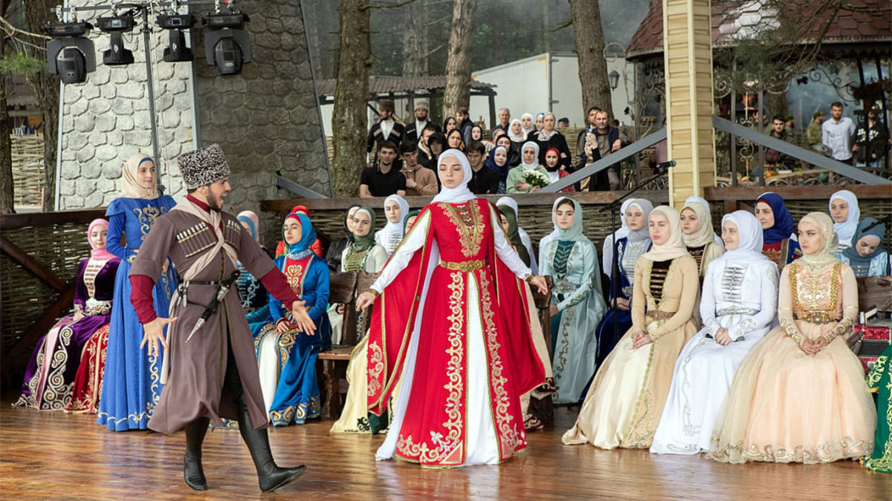
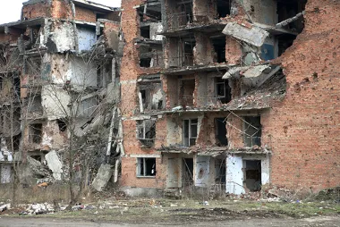
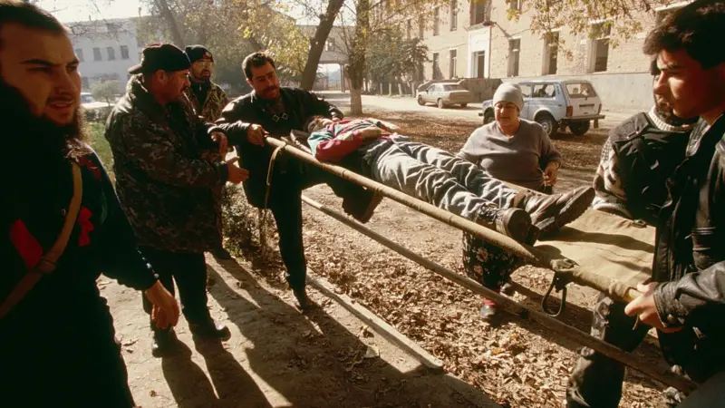

Chechênia
A Chechênia, uma república da Federação Russa, é uma região do Cáucaso Norte. Sua localização estratégica, entre a Europa e a Ásia, a tornou um ponto de convergência de diversas culturas e um palco para conflitos seculares.
A história da Chechênia é marcada por uma luta constante pela identidade e pela autonomia, marcada por conflitos e repressão. Essa pequena república, localizada no Cáucaso Norte, tem enfrentado desafios desde a anexação ao Império Russo no século XIX até os dias atuais.
O Império Russo e a Chechênia
A anexação da Chechênia ao Império Russo em 1859 representou o início de um longo período de dominação e resistência. Os chechenos, um povo com uma forte identidade cultural e uma longa tradição de independência, nunca aceitaram passivamente a dominação russa. Ao longo do século XIX, ocorreram inúmeras revoltas e insurreições, que foram brutalmente reprimidas pelas forças imperiais. A resistência chechena era alimentada pela defesa de suas terras, costumes e religião islâmica.
A União Soviética e a Política de Russificação
Com a Revolução Russa de 1917 e a subsequente criação da União Soviética, a Chechênia foi incorporada como uma república autônoma. No entanto, a política de Stalin de coletivização e industrialização forçada, juntamente com as deportações em massa de 1944, visando a russificação e o enfraquecimento das identidades nacionais, causaram um profundo trauma na população chechena. Milhares de pessoas foram deportadas para a Ásia Central, e a Chechênia foi praticamente esvaziada de seus habitantes originais.
A Guerra Fria e a Busca pela Independência
Com o fim da Guerra Fria e a desintegração da União Soviética, a Chechênia, como muitas outras repúblicas soviéticas, aproveitou a oportunidade para declarar sua independência. No entanto, a Rússia, temendo a fragmentação do país e a perda de controle sobre regiões ricas em petróleo, como a Chechênia, não aceitou a secessão. As divergências entre os dois lados levaram a duas guerras sangrentas, que causaram grande destruição e milhares de mortes.
Legado
As guerras na Chechênia deixaram um legado de violência, instabilidade e ressentimento. A região continua a enfrentar desafios significativos, como a reconstrução, a reconciliação e a luta contra o extremismo islâmico. A busca pela autonomia e a preservação da identidade cultural continuam sendo questões centrais para o povo checheno.
A história da Chechênia é um exemplo trágico dos conflitos que podem surgir quando a identidade nacional se choca com os interesses de um Estado mais poderoso. A luta pela autodeterminação e a busca por uma paz duradoura continuam sendo desafios complexos e urgentes para a região.
Cultura
A cultura chechena, forjada pelas montanhas do Cáucaso e pelas vicissitudes da história, é um intrincado mosaico de tradições, costumes e valores que se entrelaçam para formar uma identidade única e vibrante. A religião islâmica sunita, profundamente enraizada na sociedade chechena, serve como o alicerce sobre o qual se erguem muitos dos seus preceitos e práticas.
A família é a unidade social fundamental na cultura chechena, desempenhando um papel central na vida de cada indivíduo. Os laços familiares são extremamente fortes, e a honra da família é um valor sagrado. As decisões importantes são tomadas em conjunto, e a família estendida, que inclui tios, tias, primos e avós, desempenha um papel ativo na criação das crianças. Os valores transmitidos dentro da família incluem respeito aos mais velhos, hospitalidade, coragem e honra.
A hospitalidade é uma das características mais marcantes da cultura chechena. Um visitante, mesmo que desconhecido, é recebido com calor e generosidade. A casa de um checheno está sempre aberta para receber convidados, e oferecer comida e bebida é considerado um dever sagrado. A hospitalidade é vista como uma expressão da honra e da generosidade do anfitrião.
Dança, Música e Poesia
A dança, a música e a poesia são formas importantes de expressão cultural para os chechenos. As danças tradicionais, muitas vezes acompanhadas por instrumentos musicais como o gaita e o tambor, são uma celebração da vida e da cultura. As canções populares transmitem histórias, lendas e valores, enquanto a poesia é uma forma de arte altamente valorizada. A poesia épica, em particular, desempenha um papel importante na preservação da história e da identidade chechena.

Religião Islâmica Sunita
O islamismo sunita molda profundamente a vida dos chechenos, influenciando seus valores, costumes e práticas diárias. A fé islâmica fornece um senso de comunidade e identidade, além de guiar a conduta moral dos indivíduos. A mesquita é o centro da vida religiosa, e os líderes religiosos desempenham um papel importante na comunidade.
As Guerras Chechenas
Os conflitos mais recentes na Chechênia podem ser divididos em duas guerras principais:
- A Primeira Guerra da Chechênia, ocorrida entre 1994 e 1996, foi um conflito armado que colocou frente a frente a República da Chechênia e a Federação Russa. A Chechênia, uma república autônoma da Rússia, buscava a independência, um desejo que remonta a séculos de conflitos com o Império Russo. Com o colapso da União Soviética em 1991, a Chechênia aproveitou a oportunidade para declarar sua soberania, desencadeando uma série de tensões com Moscou.
A guerra foi marcada por intensos combates, com a Rússia lançando uma grande ofensiva militar contra a Chechênia, visando retomar o controle da região. No entanto, a resistência chechena, composta por guerrilheiros altamente motivados e com conhecimento do terreno, infligiu pesadas baixas nas forças russas. A guerra também foi marcada por acusações de crimes de guerra cometidos por ambos os lados, incluindo massacres de civis e o uso de táticas militares brutais.
Após dois anos de combates, a Rússia e a Chechênia assinaram um acordo de paz em 1996, concedendo à Chechênia uma ampla autonomia. No entanto, a paz foi frágil e a região continuou instável, com novos conflitos eclodindo nos anos seguintes. A Primeira Guerra da Chechênia deixou um legado de sofrimento e destruição, e suas consequências ainda reverberam na região até os dias atuais.

A capital da Chechênia, Grozny, foi alvo de periódicos bombardeios russos desde que tentou declarar sua independência em 1996
- A Segunda Guerra da Chechênia foi um conflito armado que ocorreu principalmente em 1999, mas com ecos até o início dos anos 2000. Esse confronto marcou um novo capítulo na disputa entre a Chechênia, que buscava sua independência, e a Rússia, que buscava manter o controle sobre a região. A guerra teve início após uma série de ataques atribuídos a rebeldes chechenos em regiões vizinhas, como o Daguestão, e nos próprios territórios russos.
A Rússia, sob o comando de Vladimir Putin, respondeu com uma ofensiva militar massiva, visando retomar o controle da Chechênia. A capital, Grozny, foi praticamente destruída durante os combates. A guerra foi marcada por grande violência, com acusações de crimes de guerra cometidos por ambos os lados. A população civil sofreu intensamente, com milhares de mortos e deslocados.
Após anos de conflitos, a Rússia conseguiu, em grande medida, restabelecer seu domínio sobre a Chechênia. No entanto, a região continua instável e a questão da independência chechena permanece latente. A Segunda Guerra da Chechênia deixou profundas marcas na região e na Rússia, e suas consequências ainda são sentidas até os dias de hoje.

Consequências das Guerras
As guerras que assolaram a Chechênia deixaram marcas profundas e duradouras na região, transformando a vida de milhões de pessoas. A destruição causada pelos conflitos foi de tal magnitude que as cicatrizes ainda são visíveis décadas depois.
Cidades inteiras foram reduzidas a escombros, com prédios históricos e infraestrutura vital completamente destruídos. Hospitais, escolas, pontes e redes de abastecimento foram alvo dos ataques, privando a população de serviços essenciais. A reconstrução se mostrou um processo lento e desafiador, com recursos limitados e obstáculos políticos.
A população civil pagou um preço altíssimo pelas guerras. Milhares de pessoas, incluindo mulheres e crianças, perderam a vida em meio aos combates. Outras tantas ficaram feridas, tanto fisicamente quanto psicologicamente. O trauma da guerra deixou marcas profundas na sociedade chechena, gerando um sentimento de insegurança e medo.
O deslocamento forçado foi outra consequência devastadora dos conflitos. Milhares de chechenos foram obrigados a abandonar suas casas em busca de segurança, gerando uma crise humanitária de grandes proporções. Muitos buscaram refúgio em outras regiões da Rússia ou em países vizinhos, enquanto outros permaneceram deslocados internamente, vivendo em condições precárias em campos de refugiados.
A instabilidade política e a fragilidade das instituições também foram agravadas pelas guerras. O vácuo de poder criado pela fragmentação da União Soviética e pelos conflitos subsequentes permitiu o surgimento de grupos extremistas, que aproveitaram o caos para ganhar influência e recrutar novos membros. A violência e o extremismo se tornaram um problema endêmico na região, dificultando os esforços de reconstrução e pacificação.
A Chechênia continua sendo uma região marcada pela violência e pela insegurança. As tensões latentes e o risco de novos conflitos persistem, ameaçando a frágil estabilidade alcançada nos últimos anos. A reconstrução da Chechênia é um processo complexo e desafiador, que exigirá a cooperação de todos os atores envolvidos, tanto dentro quanto fora da região. A superação das feridas do passado e a construção de um futuro mais promissor para a Chechênia são desafios que ainda precisam ser enfrentados.
A Chechênia, após décadas de conflitos e instabilidade, enfrenta uma série de desafios complexos que impedem sua plena recuperação e desenvolvimento. A reconstrução da região, destruída pelas guerras, é um processo lento e árduo. Cidades inteiras foram reduzidas a ruínas, e a infraestrutura básica, como estradas, pontes e sistemas de abastecimento de água e energia, precisa ser completamente reconstruída. Além disso, a economia chechena, fortemente dependente da ajuda externa, enfrenta dificuldades para se recuperar e gerar empregos.
A presença de grupos extremistas representa outra ameaça à segurança e à estabilidade da região. Aproveitando-se do vácuo de poder e da instabilidade política, esses grupos têm recrutado jovens e realizado ataques terroristas, dificultando os esforços de pacificação e desenvolvimento. A luta contra o extremismo é um desafio constante para as autoridades chechenas e russas.
Apesar dos esforços para melhorar a situação dos direitos humanos na Chechênia, denúncias de violações continuam a surgir. Tortura, desaparecimentos forçados e perseguição de minorias sexuais são apenas alguns dos problemas enfrentados pelos habitantes da região. A falta de independência do judiciário e a impunidade para os responsáveis por esses crimes dificultam a responsabilização e a garantia dos direitos fundamentais.
A relação entre a Chechênia e a Rússia é outro fator que influencia profundamente a situação na região. A desconfiança mútua, os conflitos históricos e as disputas por autonomia marcam essa relação. A Chechênia, embora formalmente parte da Federação Russa, mantém um alto grau de autonomia e enfrenta restrições em sua política interna. As tensões entre os dois lados podem, em determinados momentos, gerar instabilidade e dificultar a implementação de políticas de longo prazo.
Em resumo, a Chechênia enfrenta uma série de desafios complexos e interligados, que exigem soluções a longo prazo. A reconstrução da infraestrutura, a luta contra o extremismo, a proteção dos direitos humanos e a construção de uma relação mais estável com a Rússia são apenas alguns dos desafios que a região precisa superar para alcançar a paz e o desenvolvimento. A comunidade internacional tem um papel importante a desempenhar nesse processo, oferecendo apoio financeiro e técnico, promovendo o diálogo e incentivando o respeito aos direitos humanos.